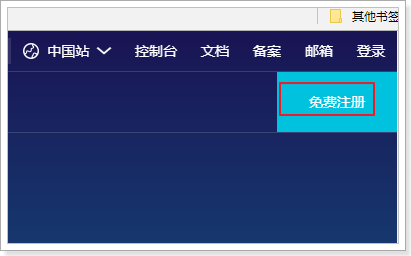
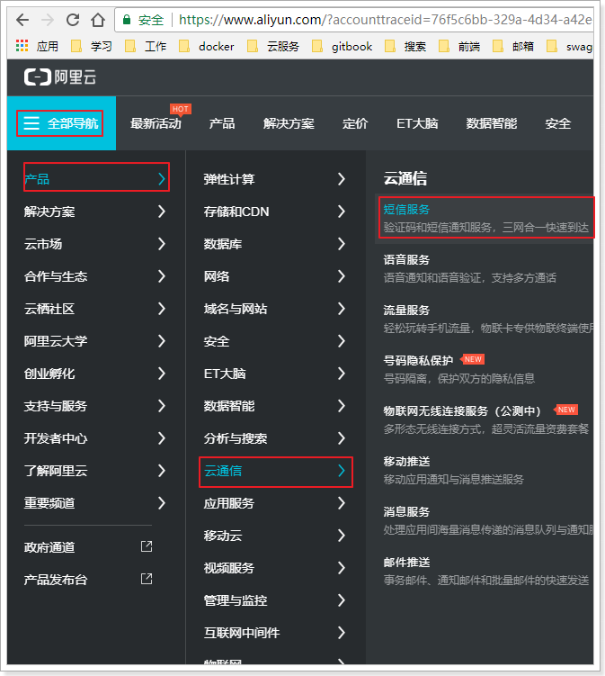
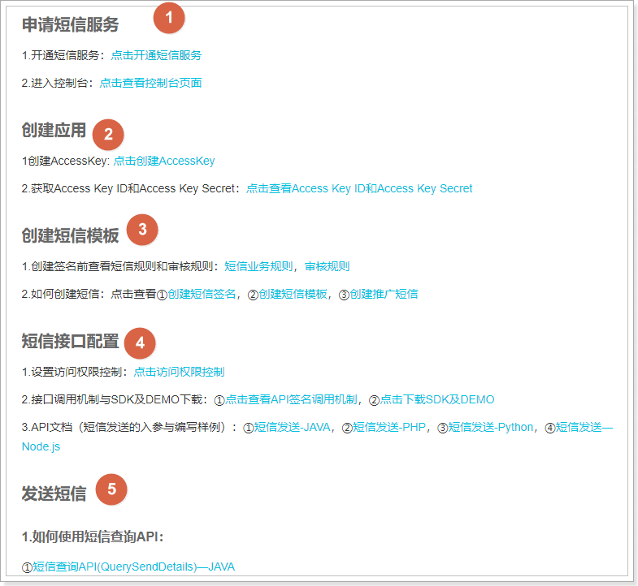
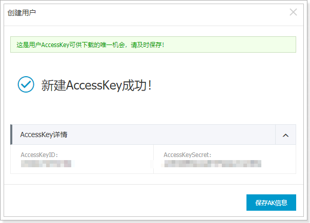

Myblog
1、开通阿里云
1.1 注册登录
访问阿里云主页：阿里云
注册：

登录：
进入云通信：

进入短信服务控制台：
选择：已阅读协议，然后立即开通

然后在控制台，即可查看新手帮助：
1.2 完整流程
查看新手帮助的完整流程：

申请短信服务我们已经完成，下一步就是创建应用：
1.3 创建AccessKey
首先，生成AccessKey：
点击后，进入新的帮助页面：
操作步骤：
-
登录RAM管理控制台。
-
在左侧导航栏，单击用户管理。
然后点击新建用户：
-
填写信息，点击确定：
-
在验证手机成功：

-
在弹出的对话框中，展开AccessKey详情查看查看AcessKeyId和AccessKeySecret。然后单击保存AK信息，下载AccessKey信息。

1.4 给用户授权
点击右侧的用户授权：
然后添加短信授权：
1.5 创建短信签名
短信签名就是短信内容头部的标签，标注短信发送者的身份。
点击管理界面的签名管理：
点击添加签名：
填写信息后点击确定，进入审核状态：
1.6 申请模板
在右侧点击模板管理：然后添加模板
填写模板信息：
进入审核状态：
2、java客户端
我们通过官网提供的帮助来完成java客户端学习：
2.1.下载SDK工具包
下载完成后得到压缩包：
解压后目录结构：
它这里提供的案例代码比较老，jdk版本也比较低。
2.2.安装SDK
我们需要把api_SDK中的两个依赖装入本地maven中，进入api_sdk目录，有两个项目需要处理：
然后进入到项目根目录：
打开cmd命令行，输入命令：
mvn install -Dmaven.test.skip=true -Dgpg.skip=true
然后进入另一个项目，上面的操作执行一遍
2.3.demo
建议大家直接使用课前资料提供的demo工程：
导入到idea中：
2.3.1.填写AccessKey：
这里要填写刚刚申请的AccessKey的id和secret：
2.3.2.填写电话及短信模板
这里要修改3个地方：
- phoneNumber：发送的目标手机
- signName：签名名称，这个去控制台查看
- templateCode：模板id，也去控制台查看
运行main函数测试：
短信发送成功了：

效果：